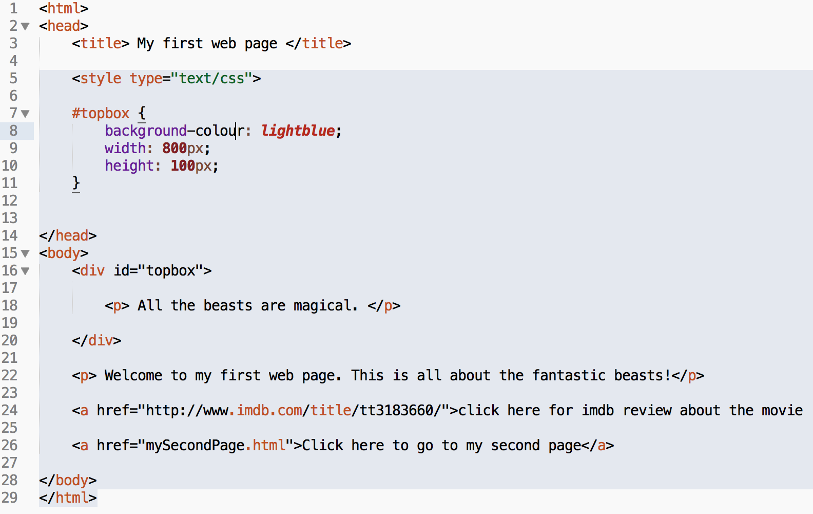
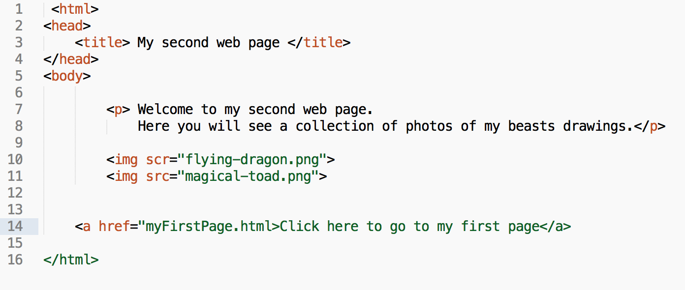

Homework tasks
1 Homework
Homework 1 - get around the web for web
- One of the important skill as as a web developer is to be able to use the vast information on the Internet to help you achieve the desired outcomes with your webpages.
- You have learned some neat html tags in your lessons. But there are many more tags that will make your webpages standout.
- One of the popular website to learn about those skills is w3schools.com
- the w3schools.com website also allows to practice your skills online so you can see the effect right away.
- Your homework:
- Explore w3schools.com website and learn 3 new tags and use the
Try It Yourselffacility to practice those. - Write down what those tags are, what they do and wheather they need both a start and a end tag.
- Explore w3schools.com website and learn 3 new tags and use the
- Answers to be submitted as a text file or image for the homework 1 badge on BourneToLearn.
Homework 2 - Identify the errors
- Tom has created two html files:
index.htmlandmySecondPage.html - Tom made the links in each of the two files so they should link to each other by a hyperlink.
- Tom opened the
index.htmlfile in browser, but disapponitedly, it did not work. - There are some mistakes in both of Tom's files. Can you identify all of the erros Tom has made in his two webpage files? Hints: there 3 errors in the each of the files.
- Tom's
index.htmlfile:

- Tom's
mySecondPage.htmlfile:

Homework 3 - Literacy Task
- In "How the Internet Works" unit, you have learned what the Internet is and what the world wide web(WWW) is. I hope you now understand they are two different things.
- Do some your own research on the world wide web on the Internet, write a 200 words summary on the following points:
- What role did sir Tim Berners-Lee play in creating the WWW and the mark up language you have been using to create webpages?
- What is a web server?
- BEFORE the Internet and the WWW, what did people in the past use to find out information such as business/school phone numbers, movie show times, and what did people do if they want to conduct some research on a holiday destination?
- Upload your work to www.bournetolearn.com or hand it in to your teacher if uploading is impossible.